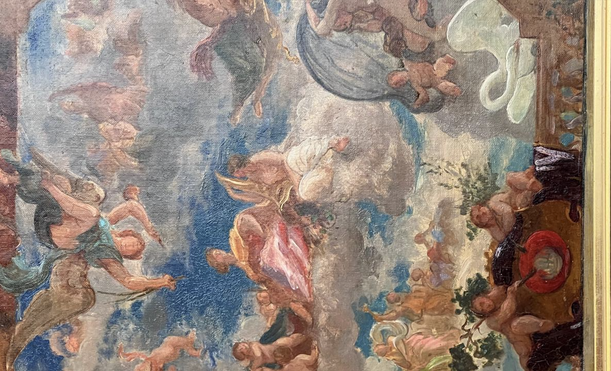
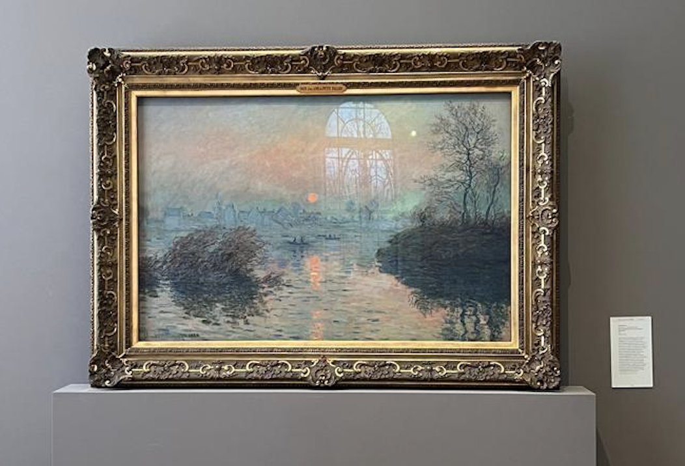

Curriculum vitae
Descargar aquí


Soy estudiante de tercer año en ITAM, estudio Ciencia de Datos y Matemáticas Aplicadas
Una de mis mayores pasiones en la vida es aprender, descubrir nuevas herramientas que surgen constantemente y explorar el mundo que me rodea. Este enfoque me ha permitido conocerme mejor, disfrutar más de la vida y estar siempre abierto a nuevas oportunidades de crecimiento.
Disfruto escuchar música, ver series, salir y programar, ya que cada una de estas actividades me permite desconectarme y recargar energías. Al final del día, lo más importante es encontrar un equilibrio entre el aprendizaje constante y el disfrute de la vida.

Actualmente estoy trabajando en deep_dive, una pequeña consultoría de datos y software, particularmente en proyectos de web scraping con AWS. Además, también formo parte del Datalab como co-presidente donde realizamos proyectos de impacto social pero con datos.